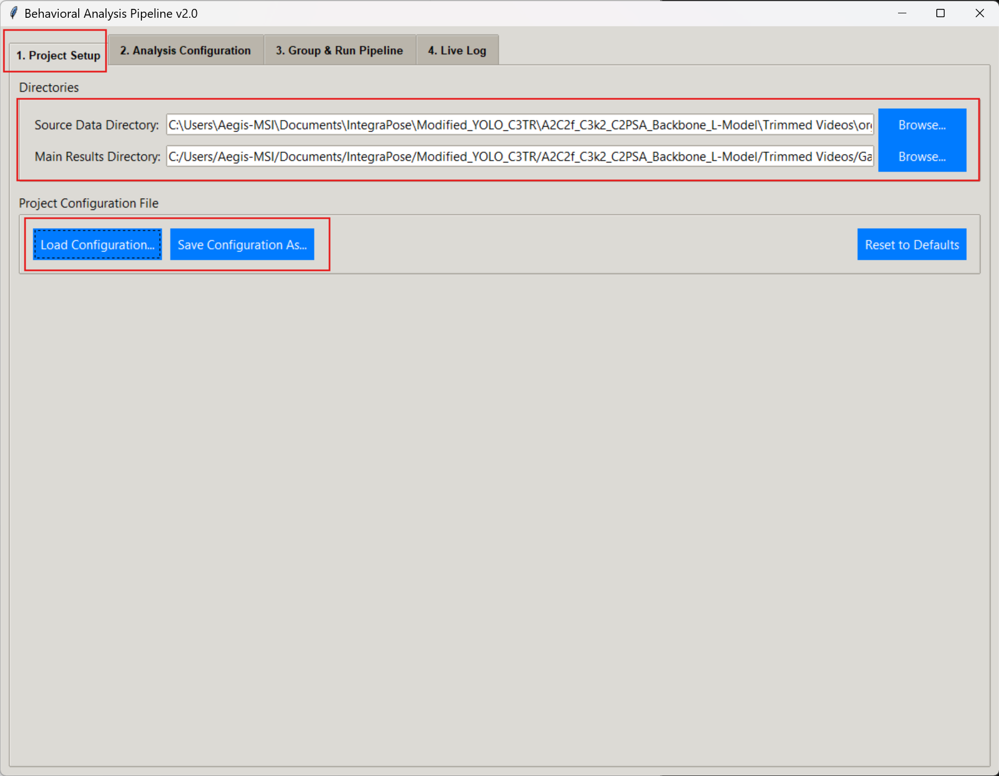
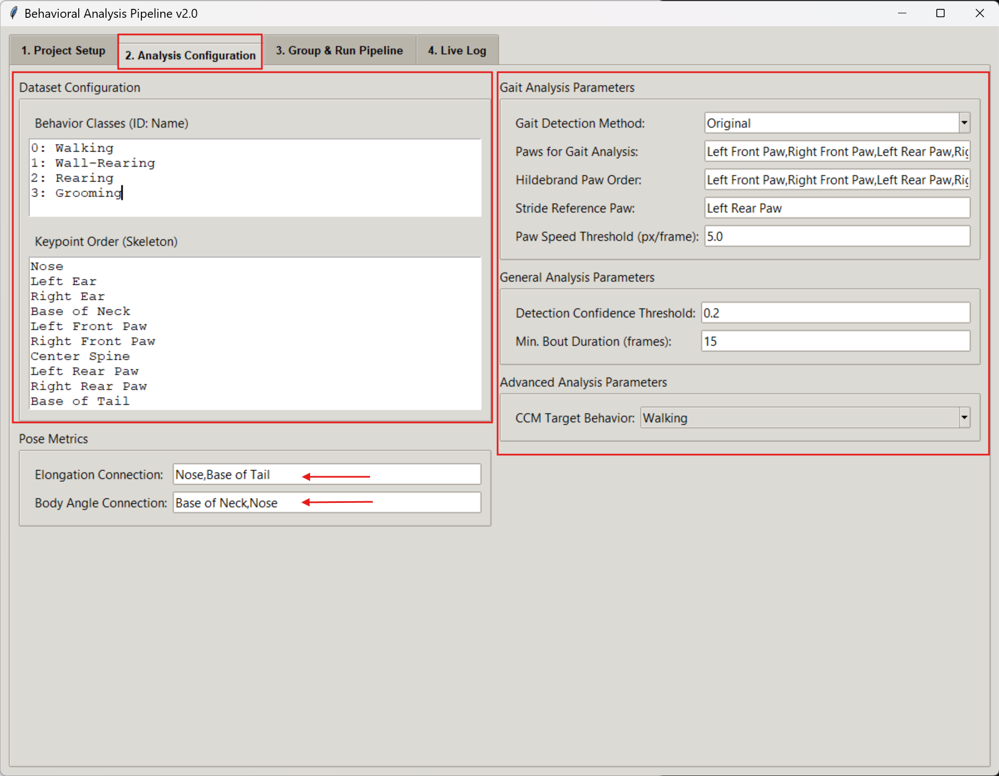
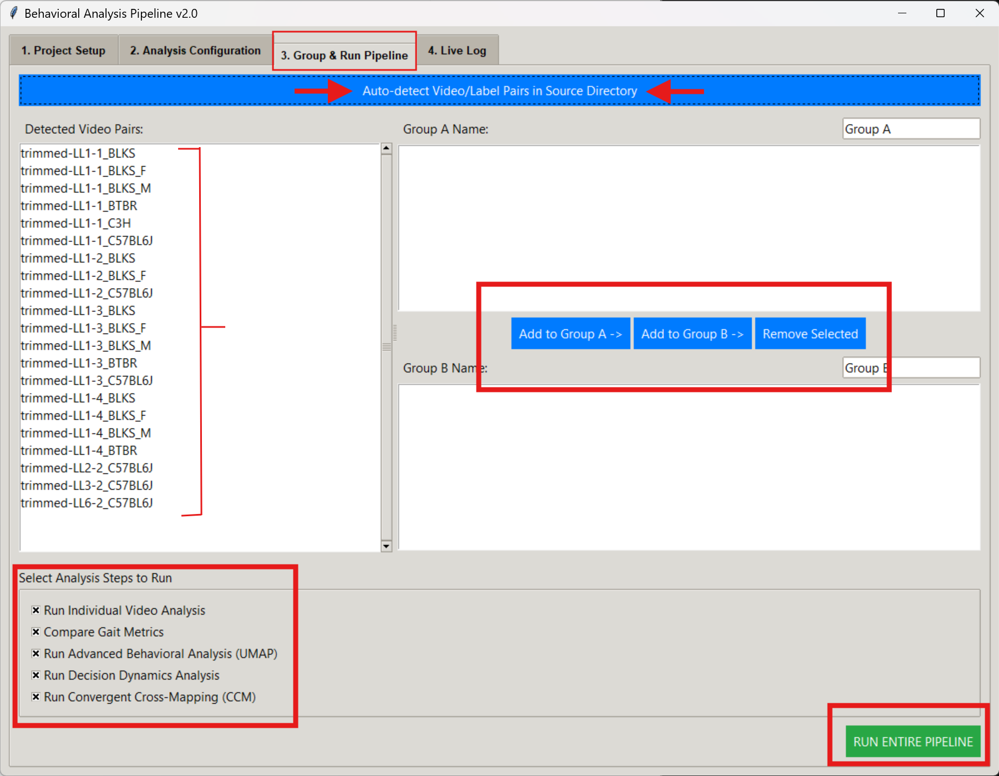
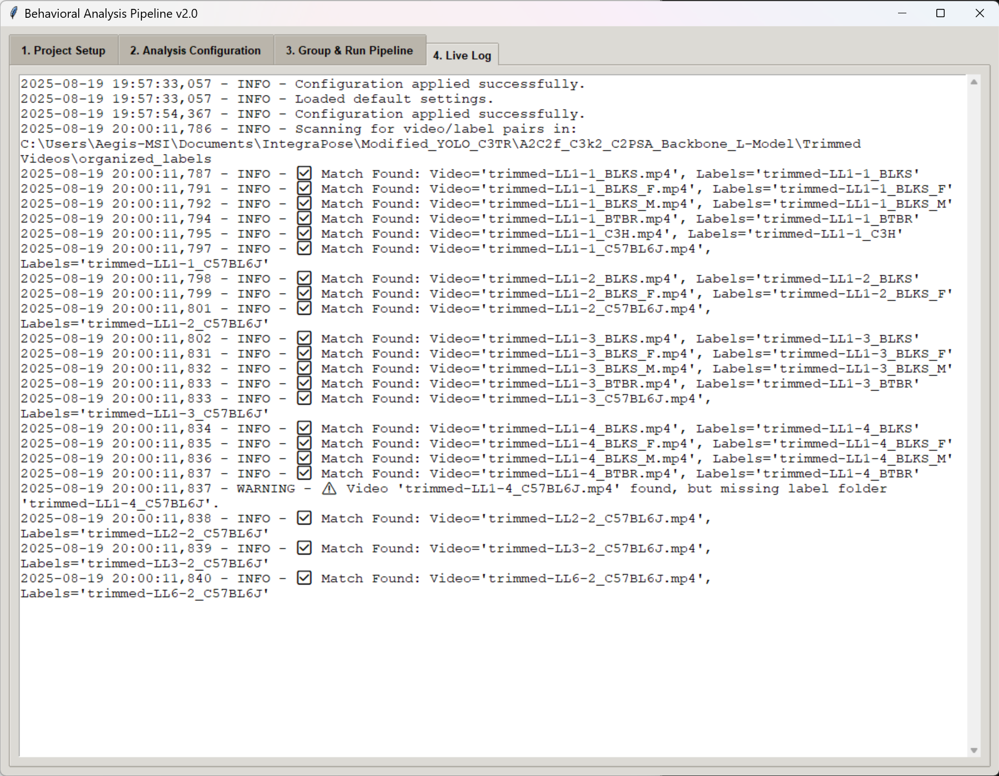

Guide to Gait Detection Methods
The pipeline offers two distinct methods for detecting strides from keypoint data. Understanding their principles will help you choose the best approach for your specific dataset and research question.
Choosing Your Detection Method
Threshold-Based Method
This method uses a simple speed cutoff to distinguish between a paw that is on the ground ('stance') and one that is moving through the air ('swing').
How It Works:
- Calculates the instantaneous speed of each paw.
- If paw speed is below a set threshold, it's labeled 'stance'.
- If paw speed is above the threshold, it's labeled 'swing'.
- A stride is defined as the time between two consecutive 'foot strike' events (swing → stance transitions).
Best For: Clean data with a clear distinction between walking and stopping. It's fast and easy to interpret.
Consideration: Can be sensitive to the chosen speed threshold and may misclassify minor, stationary movements.
Peak-Based Method
This advanced method analyzes the full velocity profile of a paw to identify the kinematic signature of a true step, making it more robust.
How It Works:
- First identifies periods of actual locomotion based on body speed.
- Analyzes the paw's speed profile within these periods.
- Uses a peak-finding algorithm to locate the moment of maximum swing speed (peak) and minimum speed (troughs).
- A stride is defined between consecutive foot-strikes (troughs) that bracket a valid speed peak.
Best For: Datasets with noisy tracking or animals that make subtle, non-locomotory movements. More accurately isolates true walking/running strides.
Consideration: More computationally intensive and may miss extremely slow or atypical strides that lack a clear velocity peak.
How to Configure Gait Analysis
Setup Project and Keypoints
In **Tab 1: Project Setup**, define your source and results directories. You can also save or load a project configuration file here. Ensure your Keypoint Order in Tab 2 correctly lists the names for all paws you intend to analyze.
Configure Gait Parameters
Navigate to **Tab 2: Analysis Configuration** and find the "Gait Analysis Parameters" section. This is where you will choose your analysis method and define key parameters.
- Select the Method: Use the Gait Detection Method dropdown menu to choose between Threshold-Based and Peak-Based.
- Assign Paws: In the Paws for Gait Analysis field, enter the names of the keypoints corresponding to the paws you want to analyze, separated by commas.
- Set Reference Paw: Specify one paw in the Stride Reference Paw field. The pipeline will define full strides based on the footfalls of this paw.
💡 Parameter Tip
The Paw Speed Threshold parameter is primarily used by the Threshold-Based method. Its main role is to define the stance/swing cutoff for that method.
Execute and Interpret
Go to **Tab 3: Group & Run Pipeline** to assign videos to experimental groups and execute the analysis. Once the analysis starts, you can monitor its real-time progress in **Tab 4: Live Log**.
 Expected Outputs
Regardless of the method chosen, the outputs will be consistent:
- A gait_analysis_summary.csv file for each video, detailing every stride detected.
- Comparison plots in your main results folder, such as comparison_stride_length.png, which allow you to statistically compare gait metrics between your experimental groups.